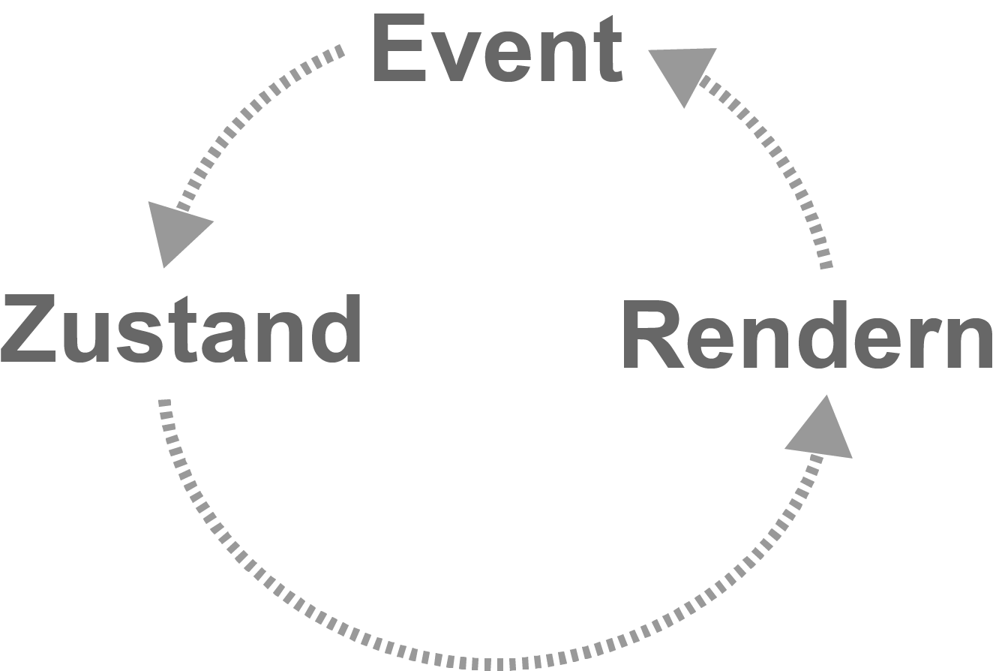
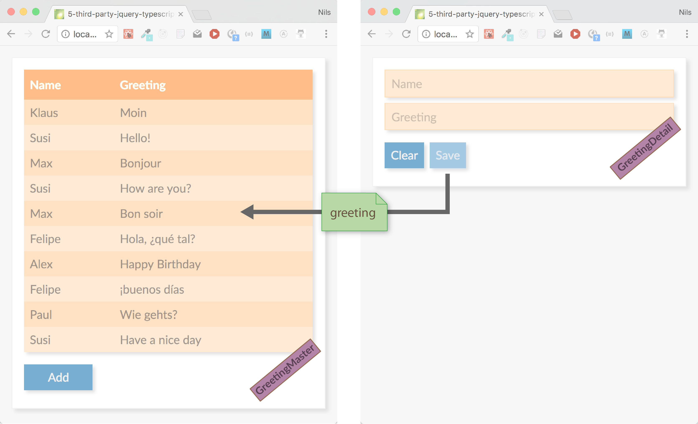
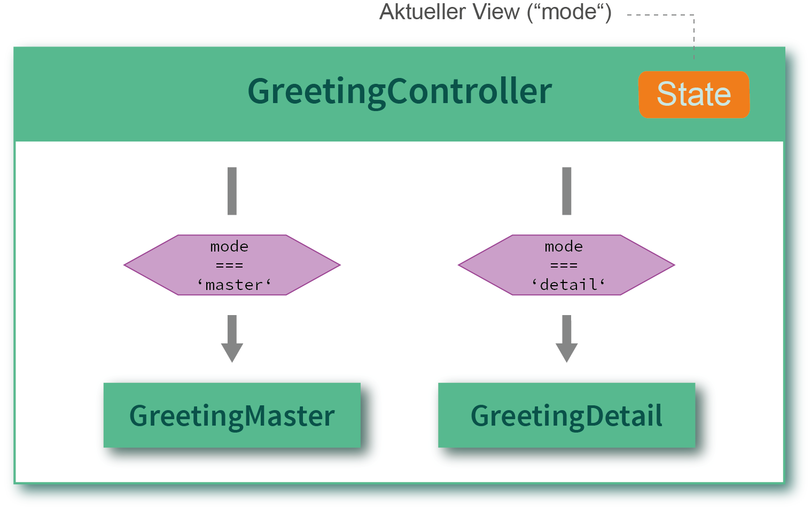
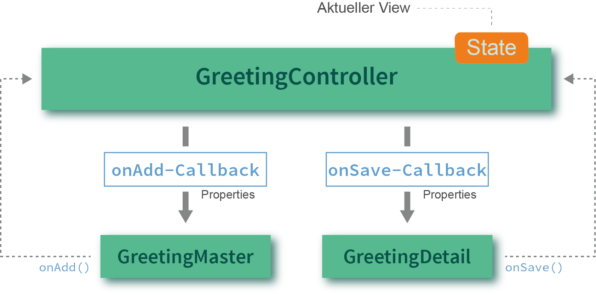
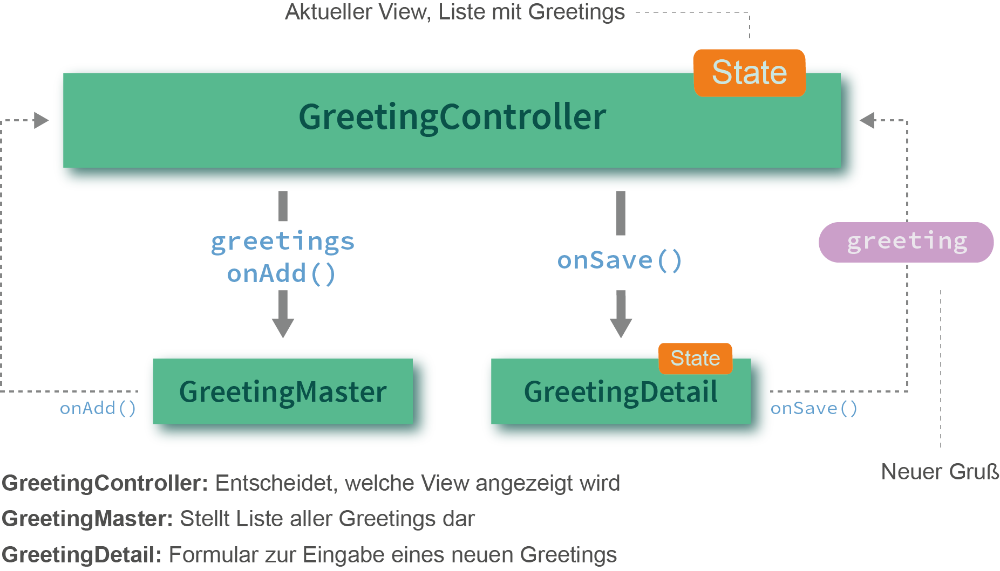
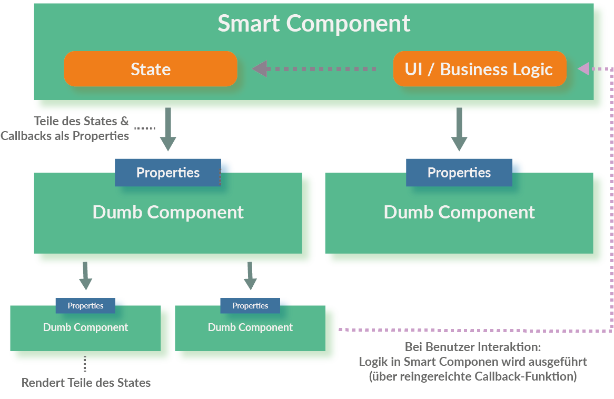
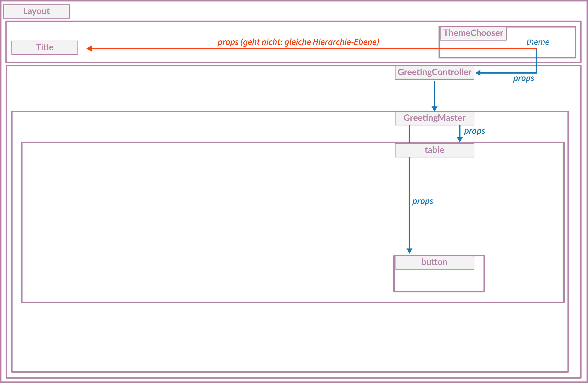

Vorbereitung
- git clone https://github.com/nilshartmann/react-training
- oder:
git stashundgit pull - cd react-training
- npm install
React Auffrischung
Nils Hartmann | @nilshartmann | nils@nilshartmann.net
Slides: react-training/2019_react_refresher.html
Oder: https://nils.buzz/react-refresher
Inhalt
React Auffrischung (Tag 1, Tag 2)
- Teil 0: React Überblick
- Teil I: React-Komponenten (Grundlagen)
- Teil II: React-Komponenten: Details, Hierarchien und Anwendungen
- Teil III: Daten lesen und schreiben vom Server
- Teil IV: React Anwendungen mit TypeScript entwickeln
- Teil V: Das Flux-Architektur-Pattern am Beispiel von Redux (Überblick)
- Teil VI: Testen von React Anwendungen (Überblick, optional)
- Teil VII: Client-seitiges Routing mit React Router (Überblick, optional)
Gemeinsame Diskussionen/Workshop (Tag 2, Tag 3)
- Projekt-Setup, Build-Tools
- Performance
- Styling/CSS
- ...
Beispiel-Anwendung

Teil 0
React-Einführung und Build-Prozess
React
- Framework von und für Facebook
-
Eingesetzt u.a. von Microsoft, Paypal, Spotify, ...
daserste.de, xing.de, saturn.de, ticketmaster.de, aok.de - Minimales API
-
Minimales Feature Set
- Ihr könnt/müsst viele Entscheidungen selber treffen
- Bewusste Verstöße gegen Best-Practices
Komponenten in React
Zentrales Konzept in React: Komponenten

Komponenten in React
Unser Beispiel in Komponenten

React Komponenten
- bestehen aus Logik und UI
- keine Templatesprache
- werden deklarativ beschrieben
- werden immer komplett gerendert (kein 2-Wege-Data-Binding)
- werden zu ganzen Anwendungen aggregiert
React Komponenten
-
Werden als Funktion mit Hooks oder ES6 Klasse implementiert
- Hooks erst seit React 16.8 (Februar 2019)
- Klassen (noch?) sehr weit verbreitet in bestehendem Code
Eine erste Komponente: Hello, World!
- Beispiel Schritt-für-Schritt (
code/workspace-live-coding)
Hello World React
import React from "react";
export default function HelloMessage(props) {
const [name, setName] = React.useState(props.initialGreeting || "");
return (
<div>
<input onChange={event => setName(event.target.value)} value={name} />
<p>{name}, World</p>
<button onClick={() => setName("")}>Clear</button>
</div>
);
}
Aufruf
index.html
<html>
<body>
</body>
<script src="dist/main.js"></script>
</html>
main.js
import React from 'react';
import ReactDOM from 'react-dom';
import HelloMessage from './HelloMessage';
const mountNode = document.getElementById('mount');
ReactDOM.render(<HelloMessage initialGreeting="Hello"/>, mountNode);
Das Beispiel-Projekt
Workspace
2019_training_refresher.htmlSlides im Root-Verzeichnis-
code/workspace: Verzeichnis für Eure Übungen
Empfehlung: dieses Verzeichnis in VS Code/IDE öffnen -
code/material: Code als Ausgangspunkt für Übungen -
code/schritte: Fertige Stände nach den einzelnen Teilen
Übung 1: React Hello-World
Mach dich mit den Werkzeugen vertraut und schreib deine erste React-Komponente
Schritt #1: Tool-Chain starten (falls noch nicht gemacht)
-
cd code/workspace -
npm start - Öffne http://localhost:8080 im Browser
- Wenn auf der Seite 'Hello, World' steht, ist alles gut

Schritt #2: Deine erste React-Komponente
- Ersetze die "statische" Komponente (HelloMessage) mit der React-Komponente aus dem vorherigen Beispiel aus den Folien ("Hello World React")
-
Zusatzaufgabe: Experimentiere mit der Anwendung, mache einige Änderungen, wie
z.B.
- Alle Eingaben sollen in Großbuchstaben auftauchen
- Gib irgendeine Rückmeldung wenn die Eingabe leer ist
Teil I
React-Komponenten (Grundlagen)
Ziel-AnwendungDokumentation
Themen
- Rendering
- Properties und Zustand
- Referenzen auf DOM-Elemente (Refs)
React: Rendering
Eigene Komponenten müssen mit einem Großbuchstaben anfangen!- Komponentenname entspricht dem Klassennamen
- native Komponenten (button, div, input, ...) beginnen mit Kleinbuchstaben
Komponenten als Funktion
- Name der Funktion entspricht Name der Komponente
- Properties werden per Parameter übergeben (als Objekt)
- Muss genau ein (Root-)Element zurückgeben (oder null, false/true)
- Über Hooks kann Zustand verwendet werden
- Über Hooks kann am Lifecycle partizipiert werden
React: JSX
-
Wird wie HTML hingeschrieben, inkl Attribute:
<div><input type="text"/></div> -
Achtung!
class-Attribut heißtclassName:<h1 className="title">...</h1> -
Attribute, die keine Strings sind, müssen in {} eingeschlossen werden:
<Counter label="Count" count={7} showValues={true} /> -
Kann pures JavaScript enthalten, eingeschlossen in {}:
const title = 'Hello, World'; <h1>{title.toUpperCase()}</h1> -
CSS-Eigenschaften werden als Objekt übergeben in Camel-Case-Notation:
const styles = { marginLeft: '10px', border: '1px solid red' }; <h1 style={styles}>...</h1>
React: Properties und Zustand
- Properties werden der Komponente von außen übergeben (und nicht verändert)
- Zustand (State) ist eine innere Eigenschaft der Komponente (die verändert werden kann)
Properties ("Props") einer Komponente
- sind Objekte mit Key-Value-Paaren
- werden als 1. Methoden-Parameter an Komponente übergeben
- dürfen nicht verändert werden
function Header(props) {
return (
<h1 style={{color: props.titleColor}}>{props.title}</h1>
);
}
}
// Mit Destructuring
function Header({titleColor, title}) {
return (
<h1 style={{color: titleColor}}>{title}</h1>
);
}
}
Children einer Komponente
props.childrenenthält Kind-Elemente
<NavBar title="Navigation">
<a href="/home">Home</a>
<a href="/shop">Shop</a>
</NavBar>
function NavBar(props) {
return (
<div className="NavBar">
{props.title}
{props.children}
</div>
);
}
Zustand einer Komponente: useState-Hook
- Beispiel: Inhalt eines Eingabefelds, Daten vom Server, Menu offen oder zu
- Werte üblicherweise immutable
- Arbeiten mit Zustand über useState-Hook
- useState liefert Array mit zwei Werten zurück: aktuellen Zustand, und setter-Funktion um Zustand zu verändern
function GreetingDetail(props) {
const [greeting, setGreeting] = React.useState(props.initialGreeting);
return <input onChange={e => setGreeting(e.target.value) value={greeting} />;
}
- Aufruf des Setters löst erneutes rendern der gesamten Komponente aus
- Es können mehrere States erzeugt werden, durch Verwendung mehrerer useState-Aufrufe
- Zustand ist eines der zentralen Konzepte von React
React Hooks
Mit React Hooks kann sich eine Komponente in Zustand und Lebenszyklus "einhaken"- Vorgestellt Ende 2018, eingeführt mit React 16.8 (Feb 2019)
-
"Normale" Funktionen, müssen aber mit
usebeginnen (useState, useEffect, ...) - Es können eigene Hooks gebaut werden ("custom hooks")
-
Importieren und verwenden von Hooks
import React from "react"; function GreetingDetail(props) { const [greeting, setGreeting] = React.useState(props.initialGreeting); // ... }import React, { useState } from "react"; function GreetingDetail(props) { const [greeting, setGreeting] = useState(props.initialGreeting); // ... }-
(
Reactmuss immer importiert werden, wenn JSX verwendet wird!)
-
(
React Hooks
Es gibt einige Regeln zu beachten, bei der Verwendung von Hooks 👆(https://reactjs.org/docs/hooks-rules.html)
Einschränkungen:
- Hooks können nur in Funktionskomponenten (und anderen Hooks) aufgerufen werden
-
Hooks müssen immer in derselben Reihenfolge und auf Top-Level-Ebene verwendet werden
- Verboten z.B. in Schleifen, if-Abfragen oder in anderen Funktionen
- Es gibt ein ESLint Plug-in zur korrekten Verwendung der Hooks
Der Hooks-Mechanismus basiert intern darauf, dass React sich die Reihenfolge der
useXyz-Aufrufe merkt!
React Hooks
Beispiele für korrekte und unerlaubte Verwendung
// ERLAUBT:
function GreetingDetail(props) {
const [greeting, setGreeting] = React.useState(props.initialGreeting);
const [name, setName] = React.useState(props.initialName);
// ...
}
// ERLAUBT:
function GreetingDetail(props) {
const [greeting, setGreeting] = React.useState(props.initialGreeting);
const uppercaseGreeting = greeting.toUpperCase();
const [name, setName] = React.useState(props.initialName);
// ...
}
// VERBOTEN:
function GreetingDetail(props) {
const [greeting, setGreeting] = React.useState(props.initialGreeting);
if (greeting !== null) {
const [name, setName] = React.useState(props.initialName);
}
// ...
}
// VERBOTEN:
function GreetingDetail(props) {
const [greeting, setGreeting] = React.useState(props.initialGreeting);
if (greeting === null) {
return Please enter greeting first
;
}
// ...
}
React Hooks
Beispiele für korrekte und unerlaubte Verwendung #2
// VERBOTEN
function GreetingDetail(props) {
function initState() {
return React.useState(props.initialGreeting);
}
const [greeting, setGreeting] = initState();
}
// VERBOTEN (initState ist 'normale' Funktion)
function initState() {
return React.useState(props.initialGreeting);
}
function GreetingDetail(props) {
// wäre erlaubt, wenn initState 'useInitState' hieße
const [greeting, setGreeting] = initState();
}
useState: Details
Wird verwendet, um den internen Zustand (State) einer Komponente zu verwalten
function GreetingDetail(props) {
const [greeting, setGreeting] = React.useState(initialValue);
// Aufruf von setGreeting führt dazu, dass Komponente neu gerendert wird
// d.h. diese Funktion (GreetingDetail) wird erneut ausgeführt
}
function GreetingDetail(props) {
// ANNAHME: Diese Komponente wird zwei mal gerendert
// (weil setGreeting aufgerufen wird, um State zu verändern)
//
// FRAGE: - wie häufig wird useState aufgeführt?
// - was passiert mit initialValue?
const [greeting, setGreeting] = React.useState(initialValue);
}
useState: Details II
-
initialValuekann lazy initialisiert werden, mit einer Funktion:function GreetingDetail(props) { const [greeting, setGreeting] = React.useState(() => determineInitialGreeting()); } -
Setter kann mit Funktion aufgerufen werden, dann wird der aktuelle State übergeben,
neuer State muss zurückgegeben werden
function Counter(props) { const [count, setCounter] = React.useState(0); <button onClick={ () => setCounter(currentCount => currentCount + 1)}>Plus</button> }
Render Zyklus
Virtual DOM
"Rendern" hat leider doppelte Bedeutung!

React: Referenzen auf nativen DOM
useRef-Hook
-
React.useRef()erzeugt ein allgemeines Referenz-Objekt - Das zurückgegebene Objekt ist über alle Render-Zyklen einer Komponente hinweg stabil
- Die Referenz kann bei einer Komponente angegeben werden
-
Über
current-Property am Referenz-Objekt erhält man später Zugriff auf das dazugehörige native DOM-Element
function GreetingDetail(props) {
const [greeting, setGreeting] = React.useState("");
const greetingInputRef = React.useRef();
function clear() {
setGreeting("");
greetingInputRef.current.focus();
}
return <>
<input ref={greetingInputRef} value="..." onChange="..." />
<button onClick={clear}>Clear<button/>
</>
}
Übung 2: Detail-Ansicht für unsere Gruß-Anwendung
Erzeuge eine Komponente mit der man einen Namen und eine Grußformel eingeben kannSchritte
Erweitere deine erste React-Komponente im workspace-Ordner
-
benenne deine HelloMessage-Komponente (und das HelloMessage-Modul) in
GreetingDetailum -
du brauchst zwei Eingabefelder, die
nameundgreetingim Zustand der Komponente setzen -
Erweitere deine Komponente so, dass man von außen Properties übergeben kann, die den
Zustand initialisieren (
initialGreetingundinitialName) -
Füge einen "Clear"-Button hinzu, der den Inhalt beider Eingabefelder löscht. Das
entsprechende Event auf dem Button heißt
onClick.
Nach dem Löschen der Eingabefelder sollte der Focus auf das erste Eingabefeld (name) gesetzt werden -
REFERENZ FÜR FOCUS:
const inputRef = React.useRef(); function clear() { set...(); inputRef.current.focus(); } // ... <input type="..." ref={inputRef} ... /> <button onClick={clear}>Clear</button>
Teil II
React-Komponenten: Details, Hierarchien und Anwendungen
Ziel-AnwendungThemen
- Darstellung von Listen
- Architektur-Idee: Controller-Komponente und View-Komponente
- Durchreichen von Zustand und Callbacks
- Komponenten als Klassen

Listen
JSX bietet nichts für Listen
Ausgabe typischerweise über
Array.map()
Elemente einer Liste brauchen einen eindeutigen Key
const greetings = [
{ id: 0, name: 'Klaus', greeting: 'Hallo' },
{ id: 1, name: 'Susi', greeting: 'Moin' }
];
const GreetingsTable(props) => (
<table>
{props.greetings.map(greeting =>
<tr key={greeting.id}>
<td>{greeting.name}</td>
<td>{greeting.greeting}</td>
</tr>
)}
</table>
);
Fragmente
-
Eine React-Komponente liefert immer genau ein (Top-Level)-Element zurück
// geht nicht: function Choices(props) { <td key="yes">Yes</td> <td key="no">No</td> } - Ein Fragment ist ein Top-Level-Element, für das kein DOM-Element erzeugt wird
// geht:
function Choices(props) {
return <React.Fragment>
<td key="yes">Yes</td>
<td key="no">No</td>
</React.Fragment>
}
// geht (Kurzschreibweise):
function Choices(props) {
return <>
<td key="yes">Yes</td>
<td key="no">No</td>
</>
}
Teil II (b)
Anwendungen und Komponentenhierarchien
Problem: Kommunikation zwischen Komponenten
#1: Welche Komponente soll angezeigt werden (Master oder Detail?)

Problem: Kommunikation zwischen Komponenten
#2: Wo wird der State (Greetings) verwaltet?
Problem #1
Welche Komponente soll angezeigt werden?
Master oder Detail?
Schritt-für-Schritt in code/workspace-live-coding
Controller Komponente #1
Verwaltet den Zustand (u.a. welche Komponente sichtbar ist)
Controller Komponente #2
Rendering der Children
function GreetingController(props) {
const [mode, setMode] = React.useState(MODE_MASTER);
if (mode === 'MASTER') {
return <GreetingMaster />;
}
return <GreetingDetail />;
}
Controller Komponente
Wie wird zwischen den Komponenten kommuniziert?
Beispiel: Child-Komponente will Parent Informationen übermitteln
Callback-Funktionen als Properties #1
Controller Komponente
Kommunikation mit Children: Callback-Funktionen als Properties #2
function GreetingController(props) {
const [mode, setMode] = React.useState('MASTER');
if (mode === 'MASTER') {
return <GreetingMaster onAdd={() => setMode('DETAIL')} />;
}
return <GreetingDetail onSave={() => setMode('MASTER')} />;
}
function GreetingMaster(props) {
return (
// Tabelle mit Greetings ...
<button onClick={props.onAdd}>Add</button>
)
}
Problem #2
Wo wird der State (Greetings) verwaltet?
Wie kommen neue Greetings (GreetingDetail) in die Liste (GreetingMaster)?
Controller Komponente
Verwaltet den "globalen" State
State wird als Property an Children übergeben

Controller Komponente
State wird als Property an Children übergeben #2
function GreetingController(props) {
const [mode, setMode] = React.useState('MASTER');
const [greetings, setGreetings] = React.useState(props.initialGreetings);
if (mode === 'MASTER') {
return <GreetingMaster
greetings={greetings}
onAdd={() => setMode('DETAIL')}
/>
}
// ...
}
function GreetingMaster(props) {
return (
<table>
{ props.greetings.map(g => <tr>...</tr>) }
</table>
<button onClick={props.onAdd}>Add</button>
)
}
Controller Komponente
Verwaltet den "globalen" State

Neues Greeting wird per Callback-Funktion zurück gegeben
Controller Komponente
Neues Greeting wird per Callback-Funktion übergeben #2
function GreetingController(props) {
const [mode, setMode] = React.useState('MASTER');
const [greetings, setGreetings] = React.useState(props.initialGreetings);
if (mode === 'MASTER') {
// ...
}
return <GreetingDetail
onSave={newGreeting => {
setGreetings: [...greetings, newGreeting];
setMode('MASTER');
}}
/>;
}
function GreetingDetail(props) {
const [name, setName] = React.useState();
const [greeting, setGreeting] = React.useState();
return (
<input name="name" . . . />
<input name="greeting" . . . />
<button onClick={() => props.onSave({name: name, greeting: greeting})}>
Add
</button>
)
}
Komponenten in Hierarchien
Beispiel: Unsere Anwendung (Zusammenfassung)
Smart und Dumb Components
(Alternativ: Container und Presentation Components)
Übung 3: Eine komplette Anwendung zusammen setzen
Füge deinen bestehenden Detail-View GreetingDetail und einen Master-View
über eine Controller-Komponente zusammen
Schritte
-
kopiere das Material aus
code/material/2-hierarchyin deinen src-Ordner (oder dein fertigesGreetingDetailverwenden) -
erweitere im
GreetingControllerdie render-Methode, so dass deinGreetingDetailangezeigt wird, wenn der Benutzer den Add-Button klickt:- dort gibt es bereits einen Kommentar, der dir die richtige Stelle anzeigt und weitere Details enthält
- übergib einen Callback der
addGreetingnutzt
-
im deinem
GreetingDetailbrauchst du einen neuen Knopf, der mit dem neuen Gruß den Callback aufruft
GreetingMaster

GreetingDetail

Arbeiten mit komplexem State
Um mit mehreren/komplexen States zu arbeiten (mode, greetings), gibt es zwei Möglichkeiten:
- mehrere useState-Aufrufe (wie gesehen)
- useReducer-Hook
useReducer-Hook
Hintergrund: Eine reducer-Funktion...
-
...erhält einen (vorherigen) Zustand und eine Action als Parameter übergeben
- Action sind anwendungsspezifische, beliebige JavaScript-Objekte
- ...verarbeitet die Action
- ...liefert dann den neuen, aktualisierten Zustand zurück
- ...muss Seiteneffekt frei sein ("pure function")
reducer(old_state, action) => new_state
Reducer sind zentrales Konzept von Redux, kommen aber auch in anderen Bereichen vor
(z.B. Array.reduce)
useReducer-Hook
Beispiel: Ein Reducer für den GreetingController-State
function greetingControllerReducer(state, action) {
switch (action.type) {
case "ADD_GREETING":
return { ...state, mode: MODE_DETAIL };
case "SAVE_GREETING":
const newGreeting = action.newGreeting;
return { greetings: [...state.greetings, newGreeting], mode: MODE_MASTER };
default: {
throw new Error(`Unsupported action type: ${action.type}`);
}
}
}
useReducer-Hook
Die reducer-Funktion wird von React aufgerufen, wenn eine Action "dispatched" wird
function GreetingController(props) {
dispatch({
type: ADD_GREETING
});
// oder:
dispatch({
type: SAVE_GREETING
newGreeting: ...
})
}
useReducer-Hook
Mit dem useReducer-Hook werden Zustand und Reducer "verwaltet"
- Der Hook wird mit dem initialen Zustand, sowie der reducer-Funktion aufgerufen
-
Der useReducer-Hook liefert den aktuellen Zustand, sowie eine dispatch-Funktion zurück
- Der aktuelle Zustand ist üblicherweise ein Objekt
- Die dispatch-Funktion leitet übergebene Actions an die reducer-Funktion weiter
function greetingControllerReducer(oldState, action) { /* ... */ }
function GreetingController(props) {
const [state, dispatch] = React.useReducer(
greetingControllerReducer, // reducer-Funktion
{greetings: initialGreetings, mode: 'MASTER'} // initialer Zustand
);
// ...
if (state.mode === 'MASTER') { // Zugriff über state-Objekt
return <GreetingMaster onAdd={() => dispatch({type: 'ADD_GREETING'})}
}
// ...
}
React: Komponenten als Klassen
Demo-Anwendung ohne Error Boundary
Demo-Anwendung mit Error Boundary
Error Boundaries
Wenn beim Rendern einer Komponente ein Fehler auftritt, fliegt die gesamte Anwendung aus dem DOMError Boundaries sind eine Art catch-Block für Komponenten
- ...werden in der Komponentenhierarchie an beliebiger Stelle eingebunden, und "fangen" Fehler unterhalb auf
- ...im Fehlerfall können sie eine Fehlermeldung rendern
- ...ganz normale React-Komponenten
- ...müssen ES6-Klassen-basierte Komponenten sein
Komponenten als Klassen
Statt useState: State als this.state und this.setState()
Properties als this.props
import React from "react";
export default class GreetingDetail extends React.Component {
constructor(props) {
super(props);
this.state = {
name: props.initialName,
greeting: props.initialGreeting
};
}
render() {
return (
<div>
<input
value={this.state.name}
onChange=
{event => this.setState({name: event.target.value})}
/>
<input
value={this.state.greeting}
onChange=
{event => this.setState({greeting: event.target.value})}
/>
</div>
);
}
}React: Rendering
Jede React Komponenten-Klasse braucht eine render-Methode:
- wird aufgerufen beim ersten Rendering und wenn sich der Zustand ändert
- analog zur Komponente als Funktion
Properties einer Komponente
- Properties werden über den Konstruktor in die Komponente hineingereicht
-
Zugriff über
this.props
class Header extends React.Component {
constructor(props) {
super(props);
}
render() {
return (
<h1 style={{color: this.props.titleColor}}>{this.props.title}</h1>
);
}
}
- Zum Vergleich: Komponente als Funktion
function Header(props) {
return (
<h1 style={{color: this.props.titleColor}}>{this.props.title}</h1>
)
}
Zustand einer Komponente
-
Initialisieren im Konstruktor mit
this.state={} - Zustand lesen über
this.state -
Zustand setzen über
this.setState()- Achtung: kein "reiner" Setter
- Führt alten und neuen Zustand zusammen
- Wird asynchron ausgeführt!
- Löst erneutes rendern der gesamten Komponente aus
Beispiel: State in Komponente als Klasse
import React from "react";
export default class GreetingDetail extends React.Component {
constructor(props) {
super(props);
// STATE INITIALISIEREN
this.state = {
name: props.initialName,
greeting: props.initialGreeting
};
}
render() {
return (
<>
<input // ZUGRIFF AUF STATE:
value={this.state.name}
onChange= // SETZEN:
{event => this.setState({greeting: event.target.name})}
/>
<input ... />
</>
);
}
}Beispiel: Error Boundary
getDerivedStateFromError und componentDidCatch werden von React im Fehlerfall aufgerufen
class ErrorHandler extends React.Component {
constructor(props) {
super(props);
this.state = { error: null };
}
static getDerivedStateFromError(error) {
return { error: error.toString() };
}
componentDidCatch(error, info) {
console.error("uups... we caught an error", error, info);
}
render() {
if (this.state.error) {
return (
<div>
<h1>An error occured!</h1>
<pre>{this.state.error}</pre>
<button onClick={() => this.setState({ error: null })}>Try again</button>
</div>
);
}
return this.props.children;
}
}
Beispiel: Error Boundary
Lifecycle
class ErrorHandler extends React.Component {
constructor(props) {
super(props);
this.state = { error: null };
}
static getDerivedStateFromError(error) {
return { error: error.toString() };
}
componentDidCatch(error, info) {
console.error("uups... we caught an error", error, info);
}
render() {
if (this.state.error) {
return (
<div>
<h1>An error occured!</h1>
<pre>{this.state.error}</pre>
<button onClick={() => this.setState({ error: null })}>Try again</button>
</div>
);
}
return this.props.children;
}
}
- Komponente wird instantiiert, Konstruktor aufgerufen, State vorbelegt (error = null)
-
Komponente wird gerendert. Da
this.state.errornicht gesetzt ist, werden die Children gerendert - Fehler tritt in Unterkomponente beim Rendern auf
-
componentDidCatchwird aufgerufen (Fehler kann z.B. protokolliert werden) -
getDerivedStateFromErrorwird aufgerufen und liefert einen neuen Teil-State zurück.
(Andere Teile des States bleiben unverändert) -
Komponente wird erneut gerendert. Da
this.state.errorjetzt gesetzt ist, wird die Fehlermeldung angezeigt, inklusive des Buttons -
Nach dem Klick auf den Button, wird
this.state.errorwieder auf null gesetzt -
Komponente wird neu gerendert (durch
setState). Dathis.state.errorwieder null ist, werden die Children erneut gerendert
Beispiel: Error Boundary
Verwendung
import React from "react";
import ReactDOM from "react-dom";
import ErrorHandler from "./ErrorHandler";
import GreetingController from "./GreetingController";
ReactDOM.render(
<ErrorHandler>
<GreetingController />
</ErrorHandler>,
document.getElementyById("mount")
);
Hier Error Boundary um die gesamte Anwendung, kann aber auch innerhalb der Anwendung an beliebiger Stelle in der Komponentenhierarchie eingefügt werden
Übung: Ein ErrorBoundary implementieren (bei Interesse)
Vervollständige die ErrorHandler-Komponente, um ein Gefühl für das Arbeiten mit State in Klassen-Komponenten zu bekommen
Schritte
-
kopiere das Material aus
code/material/2c-error-boundaryin deinen src-Ordner und starte Webpack neu (Beenden mit Ctrl+C) -
die Anwendung ist nun mit einem ErrorBoundary umschlossen (siehe
src/main.js), der aber immer die Children rendert (also auch, wenn Fehler aufgetreten ist) -
Füge in das GreetingDetail einen "simulierten" Fehler ein, der z.B. auftritt, wenn ein
aeingegeben wurde:export default function GreetingDetail(props) { const [name, setName] = React.useState(props.initialName || ""); // ... if (name === "a") { throw new Error("This should not happen"); } return ...; } -
Vervollständige nun die Klasse
ErrorHandler. Dort sind entsprechende TODOs eingetragen
Teil III
Daten lesen und schreiben vom Server
Ziel-AnwendungHerausforderungen
- Wie machen wir das Laden und Speichern technisch?
- Wo steht der Code zum initialen Laden der Grüße? (beim Start der Anwendung)
- Wo speichern wir?
- Wie funktioniert asynchrone Verarbeitung in React?
Server-Calls
- React macht keine Angabe, wie Server-Calls (technisch) gemacht werden
-
Häufig in React verwendet: fetch API
- Browser-API zum Ausführen von HTTP Requests
- hohe Verbreitung
- Spezifikation: https://fetch.spec.whatwg.org/
- Polyfill: https://github.com/github/fetch
- Populäre Alternative: Axios
Beispiel: fetch
Daten lesen per GET
// Für GET Zugriff reicht es, die URL anzugeben:
try {
const response = await fetch('http://localhost:7000/api/greetings')
const json = await response.json();
// ...
} (catch ex) {
console.error('request failed', ex)
}
// Alternative mit Promise:
fetch('http://localhost:7000/api/greetings')
.then(response => response.json())
.then(json => /* ... */)
.catch(ex => console.error('request failed', ex));
Beispiel #2: fetch
Daten lesen per POST
fetch erwartet als zweiten Parameter ein Objekt mit
Konfigurationsparametern, u.a:
-
method: gibt die HTTP Methode an (PUT,POST,DELETE, ...) headers: Objekt mit HTTP Headern für den Requestbody: Der Request-Payload (als String)
const response = await fetch(url, {
method: 'POST',
headers: {
'Accept': 'application/json',
'Content-Type': 'application/json'
},
body: JSON.stringify(payload)
})
// ...
ES6: Promises
Ein Promise ist ein Versprechen auf einen Wert
Wird evtl. erst in der Zukunft eingelöst
Verkettete Ausführung
const promise = . . .;
// 'then' gibt ein neues Promise zurück
const promise2 = promise.then(value => `${value} plus stuff`);promise2.then(value => console.log(value));
// Ausgabe nach einer Sekunde: "Result from promise plus stuff"
Fehler führen zum Abbruch der Chain
Allerdings muss man etwas tun, um das mitzubekommen: catch()
Catch-Klausel im Erfolgsfall
Promise
// creates and directly resolves promise
.resolve('Result from promise')
.then(x => {
// this will be printed
console.log(x);
})
.then(() => {
console.log('This will be printed');
})
// this will NOT be printed as no error occured
.catch(e => console.log('error: ', e))
// Output:
// Result from promise
// This will be printedCatch-Klausel im Fehlerfall
Promise
// creates and directly resolves promise
.resolve('Result from promise')
.then(x => {
// this will be printed
console.log(x);
throw new Error('Something went wrong');
})
.then(() => {
console.log('This will NOT be printed');
})
// this will be printed
.catch(e => console.log('error: ', e))
// Output:
// Result from promise
// error: [Error: Something went wrong]Alternative zu Promises
async / await
Erlauben es, asynchronen Code "linear" hinzuschreiben
- Seit ECMASCript 2017 Standard
- Babel und TypeScript können nach ES5 compilieren
- Promise Polyfill für ältere Browser verwenden
async / await
asyncdefiniert "async functions"-
asyncfunctions liefern immer ein Promise zurück:async function greet(name) { return `Hello, ${name}`; } const greeting = greet('Klaus'); // greeting ist ein Promise! console.log(greeting instanceof Promise); // => true console.log(greeting) // => Promise {<resolved>: "Hello, Klaus"} -
asyncfunction als Fat Arrow function:const greet = async (name) => `Hello, ${name}`; const greeting = greet('Klaus'); // greeting ist ein Promise! console.log(greeting instanceof Promise); // => true console.log(greeting) // => Promise {<resolved>: "Hello, Klaus"} -
Nur in
async functions kann
awaitverwendet werden!
async / await
await wartet auf erfüllte Promises
async function greet(name) {
return `Hello, ${name}`;
}
// oder:
function greet(name) { return new Promise(...); }
async function sayWhat(name) {
const greeting = await greet(name);
// ...Achtung! Hier zwischen kann Zeit vergehen...
// greeting ist ein String!
console.log(greeting); // => Hello, ...
}
async / await
Statt then bzw catch werden mehrere
await Statements bzw Exception Handling verwendet:
// Liefert ein Promise zurück
async function loadUser(username) { . . . };
async function loadProfileDate(userId) { . . .};
async function loadData() {
try {
const user = await loadUser('klaus');
const profile = await loadProfileData(user.userId);
} catch (e) {
console.error("Something failed")
}
}
fetch im Detail
try {
// 1. fetch returns a promise, that will be resolved
// with a Response object when response is received
// from server
const response = await fetch('http://localhost:7000/greetings');
// 2. the Response object contains a json() function,
// that returns the parsed JSON from the Response body
const json = await response.json();
// 3. with the resolved JSON object we set the
// component state (=> leads to re-rendering)
setGreetings(json);
} catch (err) {
// 4. in case something goes wrong (during request,
// request processing or rendering)
console.error('request failed', err);
// as an alternative we could set and render an error msg:
setError(err.toString());
}
Wann werden Daten gelesen und geschrieben?
Initiales Laden von Daten
Komponenten müssen Seiteneffekt-frei sein
Beispiele für Seiteneffekte:
- Daten laden
- DOM verändern
- Websockets Verbindung öffnen
- console.log 🤔
useEffekt-Hook
Der useEffekt-Hook erlaubt es, Seiteneffekte zu definierten Zeitpunkten auszuführen
useEffekt-Hook
Der useEffekt-Hook erlaubt es Seiteneffekte zu definierten Zeitpunkten auszuführen- Zeitpunkte: nach initialem Rendern der Komponente, nach Rendern durch Aktualisierung und nach dem Entfernen aus dem DOM
function GreetingController(props) {
React.useEffect(
() => console.log("Ich werde nach JEDEM Rendern ausgeführt")
);
}
function GreetingController(props) {
React.useEffect(
() => console.log("Ich werde nur nach 1. Rendern ausgeführt"),
[]
);
}
function GreetingController(props) {
React.useEffect(
() => console.log("..."),
[props.greetingId])
);
}
useEffect Hook
Zwei Parameter:
- Callback-Funktion, die aufgerufen wenn entsprechendes Ereignis eintritt (z.B. initiales Rendern abgeschlossen)
-
Ein Array mit Abhängigkeiten:
- Wenn kein Array angegeben wird, wird der Effekt nach jedem Rendern ausgeführt (achtung! Endlosschleife möglich)
- Wenn ein leeres Array angegeben wird, wird der Effekt nur nach dem 1. Rendern ausgeführt
- Wenn Werte angegeben werden, wird der Effekt ausgeführt, wenn sich mind 1 Wert verändert hat
Um auf das Entfernen der Komponente aus dem DOM zu reagieren (z.B Resourcen freigeben), kann die Callback-Funktion eine weitere Funktion zurückliefern, die dann ausgeführt wird:
function GreetingController(props) {
React.useEffect(
() => {
console.log("greetingId hat sich geändert");
return () => console.log("Ich bin entfernt worden")
},
[props.greetingId])
);
}
Initiales Laden von Daten
Schritt-für-Schritt (code/workspace-live-coding, vorher schritte/2-hierarchy reinkopieren)
Initiales Laden von Daten
useEffect und (useState) werden verwendet um Daten nach dem
1. Rendern zu laden:
function GreetingController() {
const [mode, setMode] = React.useState(MODE_MASTER);
const [greetings, setGreetings] = React.useState([]);
React.useEffect(() => {
async function loadGreetings() {
let greetings = null;
try {
const response = await fetch(BACKEND_URL);
greetings = await response.json();
} catch (err) {
console.error("LOADING GREETINGS FAILED:", err);
return;
}
setGreetings(greetings);
}
loadGreetings();
}, []);
// ...
}
Laden von Daten mit Props
Aufgabe: Daten sollen abhängig von Properties geladen werden
Beispiel: einzelnes Greeting per greetingId
function SingleGreetingController(props) {
const [greeting, setGreeting] = React.useState(null);
React.useEffect(() => {
async function loadGreeting() {
let greetings = null;
try {
const response = await fetch(BACKEND_URL + "/" + props.id);
greeting = await response.json();
} catch (err) {
console.error("LOADING GREETING FAILED:", err);
return;
}
setGreeting(greeting);
}
loadGreeting();
}, [props.id]);
// ...
}
Speichern von Daten
Zum Beispiel als Folge einer Benutzerinteraktion:
Im Event-Handler sind wir nicht in der Render-Phase!
function GreetingController {
async function addGreeting(greetingToBeAdded) {
let newGreeting;
try {
const response = await fetch(BACKEND_URL, {
method: "POST",
headers: {
Accept: "application/json",
"Content-Type": "application/json"
},
body: JSON.stringify(greetingToBeAdded)
});
if (response.status !== 201) {
throw new Error("Invalid status code: " + response.status);
}
newGreeting = await response.json();
} catch (err) {
console.error("LOADING GREETINGS FAILED:", err);
}
// add the new greetings to the list of all greetings
// (create a new array for immutability)
// use updater function (in setGreetings) to make sure
// we get the latest 'greetings' value from state
setGreetings(currentGreetings => [...currentGreetings, newGreeting]);
setMode(MODE_MASTER);
}
return
...
<GreetingDetail onSave={newGreeting => addGreeting(newGreeting)} />
...
}
Übung: Laden und Speichern der Daten von/auf einem Server
Entwickle auf Basis von fetch eine Version des GreetingControllers, der die Daten auf dem Server laden und dort wieder speichern kann
Der Server ist bereits fertig. Zum Starten:
cd react-training/code/server
npm start
Der Server ist über Port 7000 erreichbar
Zum Testen: http://localhost:7000/greetings
Schritte
-
Kopiere
code/material/3-remote/GreetingController.jsin deinen Arbeitsbereich -
Die Serverzugriffe sollen in
loadGreetingsundsaveGreetingerfolgen- Dort sind bereits entsprechende TODOs für dich eingetragen
-
Die URL des Backends steht in der Konstante
BACKEND_URL.const BACKEND_URL = "http://localhost:7000/greetings";
Custom Hooks
Eigene Hooks können für wiederkehrende Aufgaben genutzt werdenBeispiele: Laden von Daten, Arbeiten mit spezialisiertem State, ...
Custom Hooks
-
...müssen mit
usebeginnen- (ansonsten kann der Linter nicht auf mögliche Fehler prüfen!)
- ...dürfen nur aus anderen (Custom) Hooks und Komponenten aufgerufen werden
- ...erwarten "normale" Funktionsparameter (nicht zwingend ein Objekt wie bei Komponenten)
- ...dürfen andere (Custom) Hooks verwenden
- ...beliebiger Rückgabewert möglich (alle Typen erlaubt, auch JSX!)
Ein Custom Hook zum Laden von Daten
Frage an Euch: Wie könnte ein Custom Hook zum Laden von Daten aussehen?
- Wie sieht die API für unseren Hook aus? Welche Parameter werden benötigt?
- Was gibt der Hook zurück?
- Zugabe: Bekommen wir auch einen Hinweis für den Benutzer hin, wenn Daten geladen werden (Loading Indicator)?
Zur Erinnerung, der bestehende Code:
export default function GreetingController() {
const [mode, setMode] = React.useState(MODE_MASTER);
const [greetings, setGreetings] = React.useState([]);
React.useEffect(() => {
async function loadGreetings() {
try {
const response = await fetch(BACKEND_URL);
const greetings = await response.json();
setGreetings(greetings);
} catch (err) {
console.error("LOADING GREETINGS FAILED:", err);
setGreetings(null);
return;
}
}
loadGreetings();
}, []);
return ...;
}
Übung: Ein Custom Hook zum Laden von Daten
Refaktorisiere den GreetingController, in dem Du den Code zum Laden der Greetings in einen eigenen Hook verschiebst. Du kannst den Hook einfach in die GreetingController.js-Datei schreiben.
Anforderungen
- Der
useApi-Hook benötigt zwei Paramter: URL und intial Value - Der Hook soll zwei Werte zurückliefern: den aktuellen Wert und die set-Methode zum setzen des Wertes, damit der GreetingController neue Greetings (nach 'add' hinzufügen kann)
- Die Daten sollen nur vom REST Endpunkt geladen werden, wenn sich die URL verändert
-
Bekommst Du auch den Loading State und Loading Indicator integriert?
Die KomponenteLoadingIndicatorfindest Du inmaterial/3c-remote-useApi-loading, du kannst sie in deinen src-Ordner kopieren und verwenden. Sie erwartet keine Properties.
Teil IV
React mit TypeScript entwickeln
Themen
Hintergrund: TypeScript
TypeScript is a superset of JavaScript that compiles to plain JavaScript ( http://www.typescriptlang.org/)
- Erweitert JavaScript um ein Typen System
- Jeder gültige JavaScript Code ist auch gültiger TypeScript Code
- Mittels des TypeScript Compilers wird aus TS Code JavaScript Code
TypeScript Grundlagen
Typ-Angaben werden hinter einen Bezeichner geschrieben
// Variablen können Typ-Informationen bekommen
let foo: string;
foo = 'yo';
// Error: number: This type is incompatible with string
foo = 10;
// Funktionen
function sayIt(what: string): string {
return `Saying: ${what}`;
}
sayIt('Klaus'); // ok
sayIt(10); // error
// Arrow Funktionen
const sayIt = (what: string): string => `Saying: ${what}`;
sayIt('Moin');
sayIt(123); // Error: Argument of type '123' is not assignable
// to parameter of type 'string'.
Eingebaute Typen
// string
let city: string = 'Hamburg';
// boolean
let isDone: boolean = false;
// number
let theAnswer: number = 42;
// array (note the [])
let cities: string[] = ['Hamburg', 'Barcelona'];
// alternative:
let languages: Array<string> = ['JavaScript', 'TypeScript'];
// any
let theUnknown: any = 'Who cares';
theUnknown = 666; // ok
theUnknown = true; // ok
let a: number = theUnknown; // ok
// void
function log(s: string): void { /* ... */ }
Typen können abgeleitet (inferred) werden
let city = 'Hamburg'; // city ist ein String
city = 42;
// Fehler: [ts] Type '42' is not assignable to type 'string'.
// Explizite Angabe eines Types (parameter)
// und abgeleiteter Typ (Return Type der Funktion)
function sayIt(what: string) {
return `Saying: ${what}`;
}
const said: string = sayIt('Hello TypeScript'); // ok
const saidItWrong: number = sayIt('Hello TypeScript'); // error!
Type Check ausschalten
Mit @ts-ignore (als Kommentar) kann wird die Überprüfung der nächsten Zeile
ausgeschaltet:
let city:string = "Hamburg";
city = 20259; // error: [ts] Type '20259' is not assignable to type 'string'.
// @ts-ignore
city = 20259; // ok
Nützlich in corner cases, die nur schwer mit TypeScript abbildbar sind oder bei Migration
null und undefined
null muss explizit zugelassen werden (strictNullChecks):
let city:string = null; //Type 'null' is not assignable to type 'string'.
let optionalCity:string|null = null; // OK
undefined muss ebenfalls explizit zugelassen werden:
let city:string = undefined; //Type 'undefined' is not assignable to type 'string'.
let optionalCity:string|undefined = undefined; // OK
let optionalCity:string|undefined|null = null; // OK
Optionale Parameter können mit ? gekennzeichnet werden (erlauben dann auch
undefined)
function greet(name: string, greeting?: string) {
console.log(`${greeting || 'Hello'}, {name}`);
}
greet('Susi', 'Moin')// Moin, Susi
// 2. Parameter ist optional:
greet('Klaus'); // Hello, Klaus
greet('Peter', null); // Argument of type 'null' is not assignable
// to parameter of type 'string | undefined'.
Klassen
class Sayer {
what: string; // Typ-Angabe für Felder ist erforderlich
constructor(what: string) { // Typ-Angabe für Parameter ist erforderlich
this.what = what;
}
// Angabe des Return-Types optional
sayIt(): string {
return `Saying: ${this.what}`;
}
}
Klassen (Sichtbarkeiten)
class Sayer {
// Erlaubte Sichtbarkeiten: private | protected | public
private what: string;
constructor(what: string) {
this.what = what;
}
sayIt(): string {
return `Saying: ${this.what}`;
}
}
const sayer = new Sayer("Susi");
sayer.what = ""; // ERROR: Property 'greeting' is private
Klassen (Parameter Properties)
class Sayer {
// identisch zu vorherigem Beispiel
constructor(private what: string) {
}
sayIt(): string {
return `Saying: ${this.what}`;
}
}
Klassen (readonly Felder)
class Sayer {
readonly what: string;
// Alternativ:
constructor(readonly public what: string) {
}
setWhat(newWhat: string) {
this.what = newWhat; // ERR Cannot assign to 'what'
// because it is a read-only property.
}
}
Generics
Klassen können ähnlich wie in Java mit Generics parametrisiert werden:
class Store<T> {
private value: T;
setValue(t: T) { this.value = t};
getValue() { return this.value ; }
}
const s = new Store<string>();
s.set("Klaus"); // ok
s.set(123); // err
const x:number = s.get(); // err
const y = s.get(); //OK (y ist string)
const z:string = s.get(); OK;
Eigene Typen
Mit interface und typekönnen eigene Typen (Objekt-Strukturen)
definiert werden:
// Komplexer Typ
interface Person {
name: string; // Pflicht
livesIn?: string; // Optional
}
// Alternativ (interface und type fast synonym)
type Person = { name: string; livesIn?: string; }
const susi: Person = { // OK
name: 'Klaus',
livesIn: 'Hamburg'
};
const klaus: Person = { // OK (livesIn ist optional)
name: 'Klaus'
}
const helmut: Person = {} // Error: Property 'name' is missing
const lukas: Person = {
name: 'Lukas',
profession: 'Lokführer'
} // Error: 'profession' does not exist in type 'Person'.
Eigene Typen II
Eigene Objekt-Typen können sowohl "Attribute" als auch Funktionen enthalten:
// Komplexer Typ
type Person {
name: string; // Pflicht
greet(greeting: string): string;
}
const p:Person = {
name: "Klaus",
greet(greeting: string) {
return `${greeting}, ${this.name}`
}
}
p.greet("Hello"); // OK
p.greet(123); // ERR: Argument of type '123' is not
// assignable to parameter of type 'string'.
const wrong:Person = {
name: "Susi", // OK
greet(greeting: number) { return "hello" }
// ERR: Type '(greeting: number) => string' is not assignable to
// type '(greeting: string) => string'.
// Types of parameters 'greeting' and 'greeting' are incompatible.
// Type 'string' is not assignable to type 'number'.
}
Typ Kompatibilität
Im Gegensatz zu Java/C# ("nominal typing") sind bei TypeScript zwei Typen kompatibel, sofern sie dieselbe Struktur haben ("structural typing")
interface Book {
title: string
}
interface Movie {
title: string
}
const book:Book = { title: "Das Kapital" };
const movie:Movie = book; // OK, obwohl Book !== Movie
Type Aliase
Mit type können Aliase für Typen definiert werden.
Mittlerweile sehr ähnlich zu Interfaces und fast können sowohl interface als auch type verwendet werden
type Book = {
title: string
}
type Movie = {
title: string
}
const book:Book = { title: "Das Kapital" };
const movie:Movie = { title: "Der weiße Hai" };
type MODE_DETAIL = "MODE_DETAIL";
let s:MODE_DETAIL = "MODE_DETAIL";
s = "MODE_MASTER" // ERROR
Generics
Generische Typen verwenden
type Person = { name: string };
type Movie = { title: string };
let persons:Array<Person> = [];
let movies:Array<Movie> = [];
persons.push({name: 'Klaus'});
movies.push({title: 'Batman'});
persons.push({title: 'Casablanca'}) // error ('title' not in Person)
persons = movies; // error
Methoden
Methoden können beschrieben werden
type AnEvent = { type: string; payload: any }
type ListenerFunction = (e: AnEvent) => void;
class EventEmitter {
// addEventListener erwartet EINEN Parameter:
// eine Funktion, die ein 'AnEvent' entgegennimmer
addEventListener(listenerFn: ListenerFunction) {
listenerFn(null); // err
listenerFn({ type: "GREET", payload: "Hello"}); // OK
}
}
const c = new EventEmitter();
c.addEventListener( (e) => console.log(e)); // OK
c.addEventListener( (e,p: string) => console.log(e));
// ERR: Argument of type '(e: any, p: string) => void' is not
// assignable to parameter of type '(e: AnEvent) => void'.
Union Types
Variablen, Parameter etc. können mehr als einen Typ annehmen:
type Person = { name: string };
type Movie = { title: string };
function printNameOrTitle(obj: Person | Movie) {
console.log(obj.title); // ERR: Property 'title' does not
// exist on type 'Person | Movie'
if ("title" in obj) {
// obj ist Movie hier, title ist definiert
console.log(obj.title);
} else {
// obj ist Person hier: name ist definiert
console.log(obj.name);
}
}
printNameOrTitle({name: "Klaus"}); //OK
printNameOrTitle({title: "Pulp Fiction"}); //OK
printNameOrTitle({label: "Save"}); // ERR
Intersection Types
Types können kombiniert werden. Sie enthalten dann alle Properties aus allen Types:
type Person = { name: string };
type Birthday = { dateOfBirth: number };
type PersonWithBirthday = Person & Birthday;
const x:PersonWithBirthday = {
name: "Klaus",
dateOfBirth: 1976
} // OK
const x:PersonWithBirthday = {
name: "Klaus"
} // ERR: Missing Property 'dateOfBirth'
String Literal Types
Mit einem String Literal Type kann genau festgelegt werden, welche Ausprägungen ein String annehmen kann. Dadurch sind Enum-ähnliche Konstrukte möglich.
type MODE = "MASTER" | "DETAIL" | "ERROR";
const m:MODE = "MASTER"; // OK
const n:MODE = "FEHLER"; // ERR: Type '"FEHLER"'
// is not assignable to type 'MODE'.
function getView(m: MODE) {
if (m === "NOT_FOUND") {
// ERR: This condition will always return 'false' since the
// types 'MODE' and '"NOT_FOUND"' have no overlap.
} else if (m === "DETAIL") {
// OK
}
}
Mapped Types
Bestehende Typen können auf neue Typen mit neuen Eigenschaften gemappt werden:
type Person = { name: string; lastname: string};
const p:Person = {
name: "Klaus",
lastname: "mueller"
}
p.lastname = "Meier"; // OK
// ReadonlyPerson ist ein "mapped type"
type ReadonlyPerson = Readonly<Person>;
const p2:ReadonlyPerson = {
name: "Klaus",
lastname: "mueller"
}
p2.name = "Karl"; // Cannot assign to 'name' because it is a read-only property.
React Anwendungen mit TypeScript
State und Properties von Komponenten werden mit Typen beschrieben
Achtung! TypeScript-Dateien, die JSX enthalten müssen mit
.tsx enden!
👨💻Zeigen in workspace-typescript
Typsicherheit in Funktionskomponenten
type GreetingMasterProps = {
greetings: Greeting[]
onAdd: () => void
};
function GreetingMaster(props: GreetingMasterProps) {
props.greetings.length // OK
props.greeting // compile ERROR: Property 'greeting' does not exist on type 'GreetingMasterProps'.
props.onAdd("huhu"); // compile ERROR: Expected 0 arguments, but got 1.
}
// Mit Destructuring
function GreetingMaster({greetings, onAdd}: GreetingMasterProps) => {
// ...
}
Typsichere Verwendung von Komponenten
Code Completion

Unbekanntes Property

Falsche Verwendung eines Properties

Typsicherheit in useState
Der Typ des States bei useState kann abgeleitet
type GreetingDetailProps = { intitialGreeting: string };
function GreetingDetailProps(props: GreetingDetailProps) {
const [greeting, setGreeting] = React.useState(props.initialGreeting);
// greeting ist string, weil initialGreeting ein string ist
setGreeting("huhu"); // OK
setGreeting(666); // ERROR (falscher Typ)
setGreeting(null); // ERROR (falscher Typ)
}
Oder explizit angeben
type MODE_STATE = "MODE_MASTER" | "MODE_DETAIL";
function GreetingController() {
const [mode, setMode] = React.useState<MODE_STATE>("MODE_MASTER");
// Mode ist entweder String "MODE_MASTER" oder "MODE_DETAIL"
// setMode akzeptiert nur Strings "MODE_MASTER" oder "MODE_DETAIL"
setMode("NOT_FOUND"); // compile error
setMode(null); // compile error
}
Getypte React Klassen-Komponenten
React.Component ist eine generische Klasse, die einen Typ für Properties
und State erwartet
type Greeting = {name: string; greeting: string};
type GreetingDetailProps = {
greeting?: Greeting;
onSave: (newGreeting: NewGreeting) => void;
}
type GreetingDetailState = {
name: string;
greeting: string;
}
class GreetingDetail
extends React.Component<GreetingDetailProps, GreetingDetailState> {
// ...
}
Typsicherheit in React Klassen-Komponenten
Properties und State sind typsicher
constructor(props: Props) {
super(props);
this.state = { name: '', greeting: ''} // OK
// ERROR: Object literal may only specify known properties,
// and 'aha' does not exist in type 'Readonly<State>'
this.state = {name: '', greeting: '', aha: 10};
// ERROR: Cannot assign to 'greeting' because
// it is a constant or a read-only property.
this.state.greeting = 'no way';
}
render() {
// ERROR: Property 'nothere' does not exist on type...
return <div>{this.props.nothere}</iv>;
}
React Events in TypeScript
Generisches React Event: React.SyntheticEvent
Wird parametrisiert mit dem Element, auf dem es definiert ist, z.B. HTMLInputElement
TypeScript weiß dann, wie das Event aussieht
function GreetingDetail(props) {
const [greeting, setGreeting] = React.useState("");
function handleChange(e: React.SyntheticEvent<HTMLInputElement>) {
setGreeting(e.currentTaget.value);
}
return <input onChange={handleChange} value={greeting} />
}
useRef
useRef liefert Container für beliebigen Typ zurück.
Der gehaltene
Wert kann immer entweder vom vorgegebenen Typ sein (z.B. ein HTML Element) oder
null
function GreetingDetail(props) {
const inputRef = React.useRef<HTMLInputElement>(null);
// inputRef.current kann entweder HTMLInputElement oder null ein
function reset() {
inputRef.current.focus(); // ERR: current kann null sein
if (inputRef.current) {
inputRef.current.focus(); // OK
}
}
}
Übung: Typsichere React-Komponenten
Vervollständige die Typ-Informationen der Anwendung
WORKSPACE:
Bitte arbeite in dem neuen Workspace code/workspace-typescript, der die Anwendung aus dem letzten Schritt enthält, aber in TypeScript implementiert
VORBEREITUNG:
- Beende deinen laufenden Webpack Dev Server! (Strg/Ctrl/Cmd+C)
-
Starte den neuen Dev Server mit TypeScript (statt Babel) in
code/workspace-typescript:
npm start
Aufgabe 1: Typ-Informationen ergänzen
-
Ergänze die Typ-Informationen in useInput (Vorher umbenennen
useApi.jsinuseApi.tsx. Sobald Du die Datei umbenennst, sollten Compile-Fehler angezeigt werden) -
Ergänze die Typ-Informationen in GreetingDetail (Vorher umbenennen
GreetingDetail.jsinGreetingDetail.tsx. Sobald Du die Datei umbenennst, sollten Compile-Fehler angezeigt werden)
Aufgabe 2: Neuen Mode im GreetingController einführen
- Nach dem Speichern eines neuen Greetings soll ein neuer "Feedback-View" mit einer Meldung erscheinen (statt Master), in der steht "Gruß wurde gespeichert" (o.ä.).
- Zusätzlich zu der Meldung soll der View einen "OK"-Button anzeigen.
-
Wenn der OK-Button geklickt wird, soll wieder zum Master gewechselt werden:
MASTER --onAdd--> DETAIL --onSave--> FEEDBACK --onOk--> MASTER
Teil V
Zustands-Management mit Redux
Motivation
Probleme mit der React Architektur (wie gesehen)
Problem 1: Über Komponenten verteilter Zustand

Wo muss ich nach Fehlern suchen? Wo ist die Logik?
Problem 2: Getrennte Komponentenhierarchien

Geht entweder nicht oder "Gott-Komponente" entsteht
Problem 3: Gemeinsamer ("globaler") Zustand

Wie kommt Zustand von ganz oben nach ganz unten?
Problem 4: UI und Logik vermischt

Wiederverwendung? React-unabhängigkeit? Testbarkeit?
Redux
External Statemanagement
Wiederholung
Render Cycle in Pure React

Redux extrahiert die Verantwortlichkeiten

Demo: Redux & Redux Devtools
Ziel-Anwendung(npm start in code/schritte/redux/7a-redux-complete)
Strukturierter Überblick über alle Redux Teile
Event-Handlers werden Action-Creators
export function setFilter(filter) {
return {
type: SET_FILTER,
filter
};
}
- Action-Creators erzeugen Action-Objekte
- Actions sind Kommando-artige Strukturen von Dingen, die die Applikation tun soll
- Über die dispatch-Methode des Stores werden sie an alle Reducer weiter gegeben
- Actions bestehen aus einem Typen und einer beliebigen Nutzlast (payload)
- Action-Creators machen asynchrone Operationen (später mehr)
Ein einziger Store hält den kompletten Zustand
import { Provider } from 'react-redux';
import { createStore } from 'redux';
import { rootReducer } from './reducers';
// http://redux.js.org/docs/api/createStore.html
const store = createStore(
rootReducer // reducer
);
ReactDOM.render(
<Provider store={store}>
<GreetingController />
</Provider>,
mountNode
);
- Zentraler Teil der Anwendung
- Liefert die bereits bekannte dispatch-Methode
- Der Store wird allen Componenten über die Wrapper-Komponenten Provider zur Verfügung gestellt
Middleware zwischen Dispatch und Store
import { applyMiddleware } from 'redux';
import thunk from 'redux-thunk';
const store = createStore(
rootReducer, // reducer
applyMiddleware(thunk) // middleware as enhancer
);
- Beispiel für Middleware: Thunk (de-facto-Standard), Sagas, Redux Observable
- Middleware ist ein fortgeschrittenes Feature und meistens genügt die Thunk Middleware (oder Saga oder Redux Observable)
Reducers enthalten die Kern-(Business)-Logik
import {combineReducers} from 'redux';
// http://redux.js.org/docs/api/combineReducers.html
export const rootReducer = combineReducers({
greetings, // updates greeting partial state
filter,
mode
});
- Reducer sind pure Funtionen, die den alten Zustand und eine Action bekommen und einen neuen Zustand erzeugen
- Oft bearbeitet ein Reducer nur einen Teil des Zustands
Teil-Reducer
function modeReducer(state = MODE_MASTER, action) {
switch (action.type) {
case SET_MODE:
return action.mode;
default:
return state;
}
};
- Initialisiert seinen Teilzustand (oft mit einem Default-Parameter)
- Ändert niemals Zustand direkt
- Sondern liefert einen neuen Zustand (manchmal teilweise als Kopie)
Zustand mit Komponenten verbinden
import { connect } from 'react-redux';
import * as actions from './actions';
export default connect(
state => ({
mode: state.mode
// ...
}),
// alle Actions werden automatisch mit 'dispatch' verbunden
actions
)(GreetingController);
- der Provider gibt den Store in alle Komponenten
- Die Connect-Funktion extrahiert daraus Zustand, der als Property an Komponenten übergeben wird
- Action-Creators können ebenso in Komponent gegeben werden
Verwendung von Zustand und Action-Creators in verbundenen Komponenten
function GreetingController(props) {
// state from store
const {aggregatedGreetings, greetings, mode} = props;
// action creators bound to dispatch from store
const {setMode, saveGreeting, setFilter} = props;
// ...
}
- Action-Creators und Zustand werden in Properties hinein gemerged
- Die Komponenten wird nur neu gerendert wenn sich der benutzte Zustand verändert
Redux Hooks
Seit react-redux 7.1 gibt es Hooks API
Statt connect-Funktion werden zwei Hooks verwendet:
useSelector und useDispatcher
function GreetingController() {
const dispatch = useDispatch();
// ein oder mehrere 'useSelector'-Aufrufe um Teile aus dem
// Gesamtzustand zu selektieren
const mode = useSelector(state => state.mode);
return <button onClick={() => dispatch(actions.openDetailsView()}>Add<button>;
}
Zusammenfassung Redux-Architektur

Lokaler State ist weiterhin erlaubt!
Es gibt unterschiedliche Arten von "State"

Redux
Asynchrone Actions
Problem: Asynchronität, z.B. beim Laden von Daten-
Wo unterbringen?
- Reducer sind Seiteneffekt-frei!
- Actions sind nur JavaScript-Objekte (keine Logik!)
-
Weiteres Problem: fachliche Abläufe meistens komplex(er) als nur eine Action.
- Typisch: Request Start, ... Request erfolgreich/Request fehlgeschlagen
- Redux bringt dafür nix mit :-(
- Es gibt aber Antworten: Thunk (Promi?), Saga, Observable
- Idee ist bei allen ähnlich: im Action Creator kann (a) asynchroner Code ausgeführt werden und es können (b) mehrere Actions innerhalb des ACs dispatched werden
Beispiel Anwendungen
Asynchrone Actions
Beispiel (konzeptionell)Komponente unverändert, dispatched weiterhin eine "normale" Redux Action
// in der Komponente
import { loadGreetings } from "./actions";
<button onClick={() => dispatch(loadGreetings())}>Load</button>
Die o.g. Frameworks erlauben, es "komplexe" und asynchrone Action Creator dafür zu schreiben
// Action Creator (pseudo code)
function loadGreetings() {
dispatchAction "REQUEST_START"
try {
greetings = await loadGreetingViaHttp() // ASYNCHRON !!!
dispatchAction "REQUEST_SUCCESS"
dispatchAction "SET_GREETINGS" greetings
} catch (err) {
dispatchAction "REQUEST_FAILURE" err
}
}
Reducer ebenfalls unverändert
Redux Thunk
Der Standard (?) für asynchone Action Verarbeitung
function loadGreeting(greetingId) => dispatch => {
fetch(BACKEND_URL+'/'+greetingId)
.then(response => response.json())
.then(greetings => dispatch({
type: SET_GREETINGS,
greetings
});
};
- Die Action wird nicht direkt zurück geliefert, sondern erst später dispatched
-
wir bekommen die dispatch Methode als Parameter, mit der wir später die Action
dispatchen können
- zu beliebigem Zeitpunkt
- auch mehrere Actions
- muss nicht asynchron sein
Redux Saga
Watcher Saga: horcht auf Actions und startet neue Worker Sagas (Tasks) bzw bricht laufende ab
Worker Saga/Task: implementiert die Logik
Sagas sind mit ES6 Generator Functions implementiert
Funktionsaufrufe werden deklarativ angegeben (call)
Beispiel Redux Saga
Task (Worker Saga)
function* saveGreetingToServer(action) {
yield put(apiRequestStart("Saving"));
let savedGreeting;
try {
// Funktionsaufruf (statt postGreeting(action.newGreeting))
savedGreeting = yield call(postGreeting, action.newGreeting);
} catch (error) {
yield put(requestFailure(error));
return;
}
yield put(requestSuccess());
yield put(addGreeting(savedGreeting));
}
- Funktionsaufrufe werden deklarativ mit
callbeschrieben putdispatched neue Actions-
Liefert
yieldein Promise zurück, wartet Saga mit der weiteren Ausführung der Funktion
Beispiel Redux Saga
Watcher Saga
- Watcher Sagas werden in der Saga Middleware registriert
- Sie sind verantwortlich, Tasks zu starten
// Watcher
export function* greetingSagas() {
yield takeEvery("LOAD_GREETINGS", loadGreetingsFromServer);
yield takeEvery("SAVE_GREETING", saveGreetingToServer);
// alternativ:
yield takeLatest("LOAD_GREETINGS", loadGreetingsFromServer);
}
Redux Observable
Basiert auf RxJS- Zentrales Element: Epic: verarbeitet einen Stream von Actions und gibt einen Stream von Actions zurück
- Man muss RxJS API beherrschen und mit Observables umgehen können
- Man kann nicht ohne weiteres Promises verwenden (bzw. muss Promises in Observable konvertieren)
Epic
Funktion: (action$: Observable<Action>) => Observable<Action>;
Action wird erst an Reducer verteilt, danach erst an die Epics. Alle Epics bekommen alle Actions, müssen selber filtern
- Komponente:
dispatch({type: "PING"}) - Reducer bekommen PING (und kann darauf reagieren)
- Epics bekommen PING
- Epic emitiert neue Action(s)
({type: "PONG"}) - Reducer bekommen PONG
- Epics bekommen PONG
Beispiel Redux Observables
function saveGreetingsEpic(action$) {
return action$.pipe(
ofType("SAVE_GREETING"),
flatMap(action =>
concat(
of(apiRequestStart("Saving")),
from(postGreeting(action.newGreeting)).pipe(
map(savedGreeting => addGreeting(savedGreeting))
),
of(requestSuccess())
).pipe(catchError(err => of(requestFailure(err))))
)
);
}
Und was nehmen wir nun?
Thunk
De-facto Standard, weit verbreitet, in Redux Doku erwähnt
Saga
Testbarkeit ist sehr wichtig (interne Abläufe eines Action Creators)
Dinge wie Throttling, abbrechbare Actions etc sind wichtig
Saga
Man ist RxJS-Fan
Dinge wie Throttling, abbrechbare Actions etc sind wichtig
Context API
Ziel-AnwendungProblem
Zentrale Daten, die an vielen Stellen benötigt werden

Ansatz 1: Properties durchreichen
Ansatz 2: React Context

Context...
erlaubt das Durchreichen von Informationen ohne explizites angeben als Properties
- funktioniert nur innerhalb einer Hierarchie-Ebene
- es können beliebg viele (fachliche) Context definiert werden
- besteht aus
ProviderundConsumer - Doku
Context Factory
erzeugt ein Objekt, mit zwei Komponenten
-
Provider, stellt Objekt mit Key-Value-Paaren zur Verfügung (der Context-"Value") -
Consumerwird in eigener Komponente verwendet, um auf einen Context zuzugreifen
import react from "React" from "react-router-dom";
const ThemeContext = React.createContext();
// erzeugt:
// ThemeContext.Provider
// ThemeContext.Consumer
Context Provider
Eine React-Komponente, die einen Context zur Verfüng stellt
-
wird innerhalb einer eigenen Komponente in
rendereingebunden - Nimmt ein Objekt ("Context") mit beliebigen Werten entgegen
const ThemeContext = React.createContext();
class ThemeProvider extends React.Component {
render() {
const contextValue = {
// the current theme
theme: this.state.theme,
// function to set new theme
setTheme: name => this.setState({theme: name})
};
return <ThemeContext.Provider value={contextValue}>
{this.props.children}
</ThemeContext.Provider>;
}
}
Context Consumer
Eine React-Componente, die einen bestimmt Context konsumiert
-
Mit "
static contextType = ..."" kann ein bestimmter Context referenziert werden -
Context-Objekt steht dann über
this.contextzur Verfügung - Komponente wird neu gerendert, wenn Context sich ändert
import ThemeContext from "...";
class GreetingDetail extends React.Component {
static contextType = ThemeContext;
render() {
// this.context ist Objekt aus dem ThemeContext.Provider
// z.B.:
return <div className={this.context.theme}>...</div>
}
}
Mehrere Context Consumer
Als Render-Property
-
Die
MyContext.Consumer-Komponente kann direkt verwendet werden - Als Children wird dort kein JSX-Element, sondern eine Callback-Funktion übergeben
- Die Funktion erhÌält als Parameter das Context Objekt
- Die Funktion verwendet den Context und liefert JSX zurück
- Mehrere Consumer können verschachtelt werden
import ThemeContext from "...";
function GreetingMaster(props) {
return <ThemeContext.Consumer>
{ themeContext => {
return <div className={themeContext.theme}>...</div>
}}
</ThemeContext.Consumer>;
}
React Hooks API
Mit der React Hooks API lassen sich State und Lifecycle-Methoden auch in Funktionen verwenden
Geschafft ;-)
Vielen Dank für Eure Teilnahme!
Kontakt: nils@nilshartmann.net | Xing | @nilshartmann